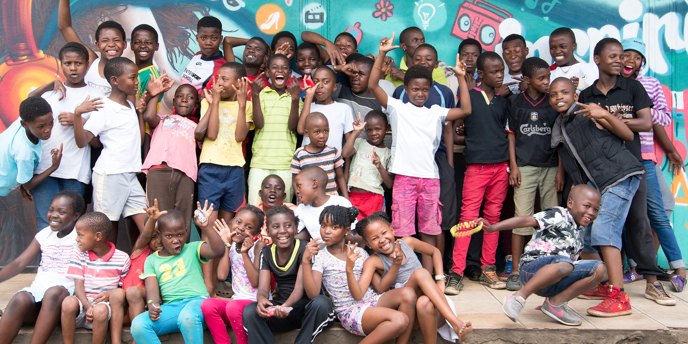
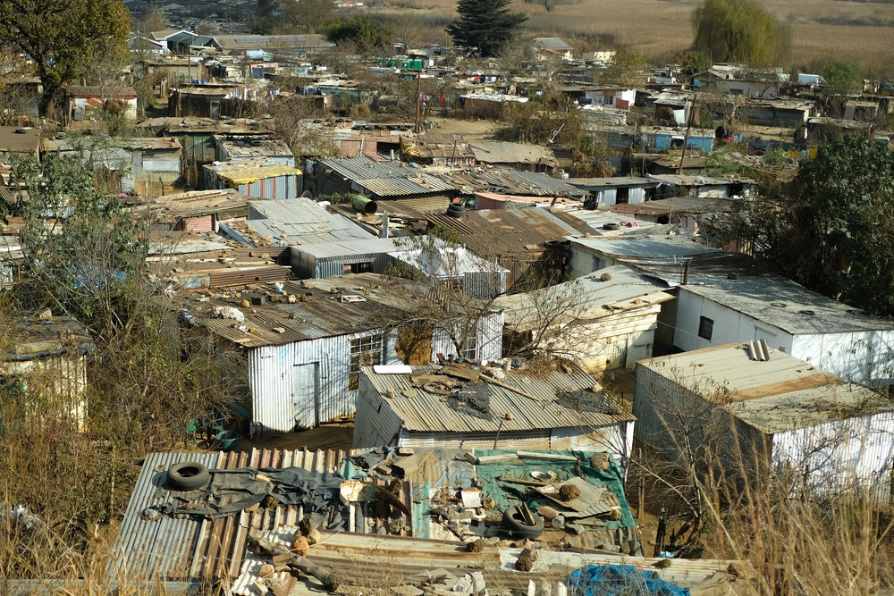
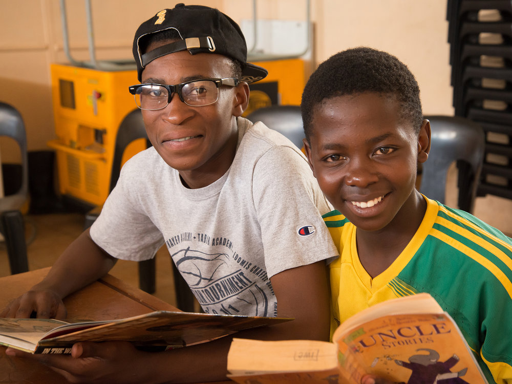

ABOUT US

Kliptown Youth Program was founded in May, 2007, by a small group of inspired and passionate young people from Kliptown who dedicated to making a difference in their community. Our dream was to help our members lift themselves out of poverty through education. From the time we began with little more than our talents, energy and a place to invite children to work with us, we have grown to an internationally recognized organization that has developed not only our members but also our staff into people with valuable skills with which they can change their own lives. As South Africa has grown into a modern country, there are, unfortunately, still many places that are neglected by the government. Kliptown, established in 1903 and the oldest township of its kind in Soweto, is one of those places. Ironically, Kliptown has immense historical and cultural importance to the history of South Africa, as it was the place where the Freedom Charter was adopted in 1955. Despite its role in history, Kliptown, with its population of forty-four thousand, is a community that lacks even the most basic human needs such as schools, health clinics, electricity, and proper sanitation.
Due to the absence of these basic necessities and overwhelming poverty, the children of Kliptown face immense challenges. Not only do these children have to walk to local schools outside Kliptown, they cannot afford the cost of uniforms, shoes, lunch and books. It is no surprise that many children turn to drugs and crime at an early age. In a community afflicted with an unemployment rate of 70%, an HIV/AIDS rate of 25%, and high teenage pregnancy, KYP enables children resist forces that would drag them down, harness their own potential, and grow into dynamic and skilled individuals who can give back to society.
We at KYP recognize that at the heart of these problems lies the lack of access to proper schooling. English is taught in most schools as a second language, and often it is a lack of facility with English that leaves students inadequately equipped to succeed on their end of high school 'matric' exams. KYP believes that if we identify and nurture talent amongst us, and ingrain the value of education in our members, we can create opportunities for success and the skills necessary for taking advantage of them. In doing so, we are creating a solution to poverty, and one by which we can stand up and show the world that we have value and the power to change our own lives. On a continent often wrought with victimhood and a handout mentality, KYP teaches its children that they deserve that which they create. Together we can empower the youth, foster the cycle of giving back, and help lift Kliptown out of poverty.